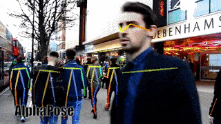
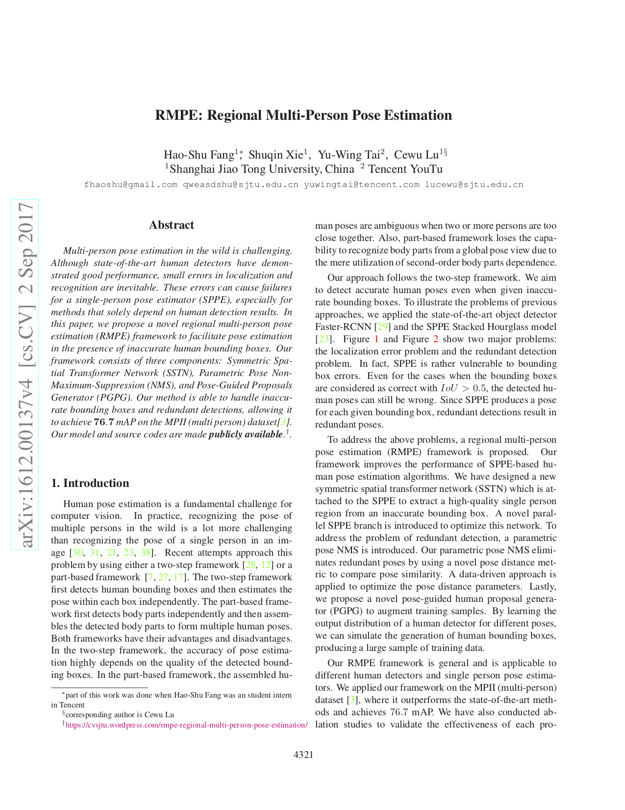

AlphaPose |
Shanghai Jiao Tong University, Machine Vision and Intelligence Group(MVIG)
Introduction
Alpha Pose is a very Accurate Real-Time multi-person pose estimation system. It is the first open-sourced system that can achieve 70+ mAP (72.3 mAP) on COCO dataset and 80+ mAP (82.1 mAP) on MPII dataset. To associate poses that indicates the same person across frames, we also provide an efficient online pose tracker called Pose Flow. It is also the first open-sourced online pose tracker that can both satisfy 60+ mAP (66.5 mAP) and 50+ MOTA (58.3 MOTA) on PoseTrack Challenge dataset.
AlphaPose-PyTorch runs at 20 fps on COCO validation set (4.6 people per image on average) and achieves 71 AP!
AlphaPose-PyTorch runs at 20 fps on COCO validation set (4.6 people per image on average) and achieves 71 AP!
Developed and maintained by Hao-Shu Fang, Jiefeng Li, Yuliang Xiu, Ruiheng Chang and Cewu Lu(corresponding authors)
|  |  |

Functionality
- Accurate Real-Time multi-person keypoint detection.
- Input: Image, video, image list.
- Output: Basic image + keypoint display/saving (PNG, JPG, AVI, ...), keypoint saving (JSON), supports multiple formats.
- Available: command-line demo, python and Lua programs
- OS: Ubuntu
Demo
Code and Papers
Our source code is available on Github， and our paper can be downloaded from here.
Bibtex
Please cite these papers if you use AlphaPose:
@inproceedings{fang2017rmpe,
title={RMPE: Regional Multi-person Pose Estimation},
author={Fang, Hao-Shu and Xie, Shuqin and Tai, Yu-Wing and Lu, Cewu},
booktitle={ICCV},
year={2017}
}
License
AlphaPose is freely available for free non-commercial use, and may be redistributed under these conditions.